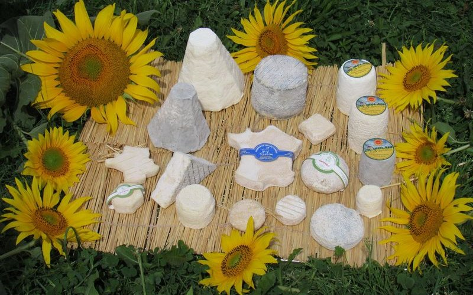

🐐
Chèvres et brebis
Un troupeau d'environ 250 chèvres, auquel s'ajoutent des brebis. Leur lait est transformé directement à la ferme.
Nathalie et Sébastien Chaize élèvent chèvres, brebis et porcs gascons au Colombier, et transforment le lait à la ferme : fromages de chèvre à tous les affinages, Charolais AOP, et charcuterie maison.

Une exploitation familiale au nord du Roannais, où l'on élève les bêtes, où l'on trait, et où l'on fabrique soi-même ce qui part ensuite au marché.
Un troupeau d'environ 250 chèvres, auquel s'ajoutent des brebis. Leur lait est transformé directement à la ferme.
Des fromages de chèvre à différents stades d'affinage, dont le Charolais, fromage d'appellation d'origine protégée, et la mini-France.
Des porcs gascons élevés sur la ferme, pour une charcuterie maison : roulé de tête, terrines, pâté en croûte.
Avec mon épouse Nathalie, nous élevons 250 chèvres dans la Loire et nous transformons le lait en différents fromages dont du Charolais AOP.Sébastien Chaize, membre de l'organisme de défense de l'appellation Charolais — propos publiés par Réussir Chèvre, 2025
La gamme varie selon la saison et la lactation des chèvres : le plus simple est de demander ce qui est prêt cette semaine.
Fromage de chèvre au lait cru, sous appellation d'origine protégée, fait à la ferme avec le lait du troupeau.
La petite pièce en forme de carte de France, reconnaissable sur le plateau.
Pyramides, bûches, palets et autres formes, du plus frais au plus sec, selon ce qui est prêt.
Une spécialité de la ferme, préparée avec les porcs gascons du Colombier.
Terrines maison issues de l'élevage de la ferme.
Le pâté en croûte de la ferme, à commander pour être sûr d'en avoir.
Choisissez vos produits et votre affinage, puis le lieu : le marché de Roanne le vendredi matin, ou la ferme, sur rendez-vous. Votre demande part directement par SMS ou par mail.
Pas de paiement en ligne : la ferme confirme la disponibilité, vous réglez au retrait.
Appelez la ferme, ou écrivez-nous : on vous dit ce qui est prêt et on vous le garde.